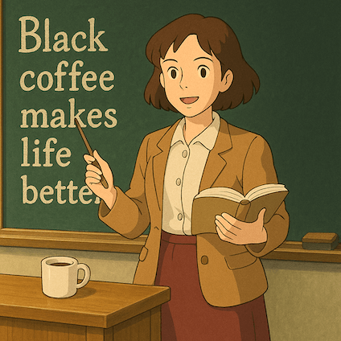
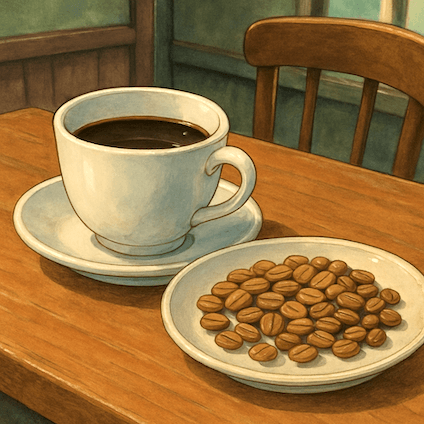
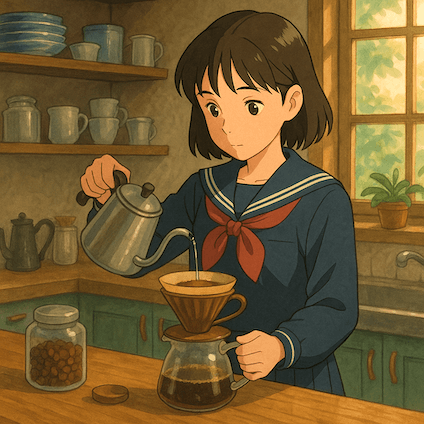

Benefit1
適時適量飲用黑咖啡促進身體健康
推薦早晨(凌晨4點~中午12點)適量飲用，有助降低心血管疾病風險與間接降低全因死亡率

Benefit2
維持上班/學習專注力
攝取咖啡後血液中咖啡因半衰期約2.5hr~4.5hr，開始工作/學習前15分鐘飲用有助專注

Benefit3
淺焙豆含有較多綠原酸
綠原酸對於心血管、糖尿病、減重皆有正面助益，黑咖啡不加奶效果更佳

Benefit4
小確幸提升生活品質
咖啡沖煮本身具有絕佳的儀式感，微調手法能獲取更多樂趣，為你的生活增添更多風采